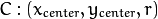
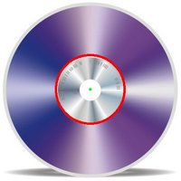

Hough Circle Transform¶
Goal¶
In this tutorial you will learn how to:
- Use the OpenCV function HoughCircles to detect circles in an image.
Theory¶
Hough Circle Transform¶
The Hough Circle Transform works in a roughly analogous way to the Hough Line Transform explained in the previous tutorial.
In the line detection case, a line was defined by two parameters . In the circle case, we need three parameters to define a circle:

where define the center position (gree point) and is the radius, which allows us to completely define a circle, as it can be seen below:
For sake of efficiency, OpenCV implements a detection method slightly trickier than the standard Hough Transform: The Hough gradient method. For more details, please check the book Learning OpenCV or your favorite Computer Vision bibliography
Code¶
- What does this program do?
- Loads an image and blur it to reduce the noise
- Applies the Hough Circle Transform to the blurred image .
- Display the detected circle in a window.
- The sample code that we will explain can be downloaded from here. A slightly fancier version (which shows both Hough standard and probabilistic with trackbars for changing the threshold values) can be found here.
#include "opencv2/highgui/highgui.hpp"
#include "opencv2/imgproc/imgproc.hpp"
#include <iostream>
#include <stdio.h>
using namespace cv;
/** @function main */
int main(int argc, char** argv)
{
Mat src, src_gray;
/// Read the image
src = imread( argv[1], 1 );
if( !src.data )
{ return -1; }
/// Convert it to gray
cvtColor( src, src_gray, CV_BGR2GRAY );
/// Reduce the noise so we avoid false circle detection
GaussianBlur( src_gray, src_gray, Size(9, 9), 2, 2 );
vector<Vec3f> circles;
/// Apply the Hough Transform to find the circles
HoughCircles( src_gray, circles, CV_HOUGH_GRADIENT, 1, src_gray.rows/8, 200, 100, 0, 0 );
/// Draw the circles detected
for( size_t i = 0; i < circles.size(); i++ )
{
Point center(cvRound(circles[i][0]), cvRound(circles[i][1]));
int radius = cvRound(circles[i][2]);
// circle center
circle( src, center, 3, Scalar(0,255,0), -1, 8, 0 );
// circle outline
circle( src, center, radius, Scalar(0,0,255), 3, 8, 0 );
}
/// Show your results
namedWindow( "Hough Circle Transform Demo", CV_WINDOW_AUTOSIZE );
imshow( "Hough Circle Transform Demo", src );
waitKey(0);
return 0;
}
Explanation¶
Load an image
src = imread( argv[1], 1 ); if( !src.data ) { return -1; }
Convert it to grayscale:
cvtColor( src, src_gray, CV_BGR2GRAY );
Apply a Gaussian blur to reduce noise and avoid false circle detection:
GaussianBlur( src_gray, src_gray, Size(9, 9), 2, 2 );
Proceed to apply Hough Circle Transform:
vector<Vec3f> circles; HoughCircles( src_gray, circles, CV_HOUGH_GRADIENT, 1, src_gray.rows/8, 200, 100, 0, 0 );
with the arguments:
- src_gray: Input image (grayscale)
- circles: A vector that stores sets of 3 values: for each detected circle.
- CV_HOUGH_GRADIENT: Define the detection method. Currently this is the only one available in OpenCV
- dp = 1: The inverse ratio of resolution
- min_dist = src_gray.rows/8: Minimum distance between detected centers
- param_1 = 200: Upper threshold for the internal Canny edge detector
- param_2 = 100*: Threshold for center detection.
- min_radius = 0: Minimum radio to be detected. If unknown, put zero as default.
- max_radius = 0: Maximum radius to be detected. If unknown, put zero as default
Draw the detected circles:
for( size_t i = 0; i < circles.size(); i++ ) { Point center(cvRound(circles[i][0]), cvRound(circles[i][1])); int radius = cvRound(circles[i][2]); // circle center circle( src, center, 3, Scalar(0,255,0), -1, 8, 0 ); // circle outline circle( src, center, radius, Scalar(0,0,255), 3, 8, 0 ); }
You can see that we will draw the circle(s) on red and the center(s) with a small green dot
Display the detected circle(s):
namedWindow( "Hough Circle Transform Demo", CV_WINDOW_AUTOSIZE ); imshow( "Hough Circle Transform Demo", src );
Wait for the user to exit the program
waitKey(0);

Help and Feedback
You did not find what you were looking for?- Ask a question on the Q&A forum.
- If you think something is missing or wrong in the documentation, please file a bug report.